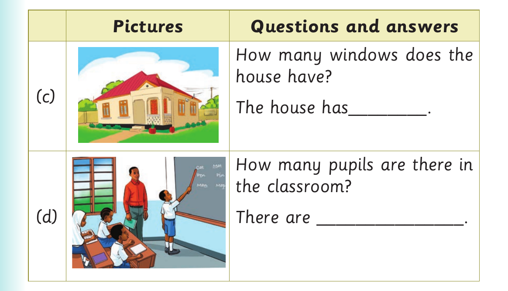
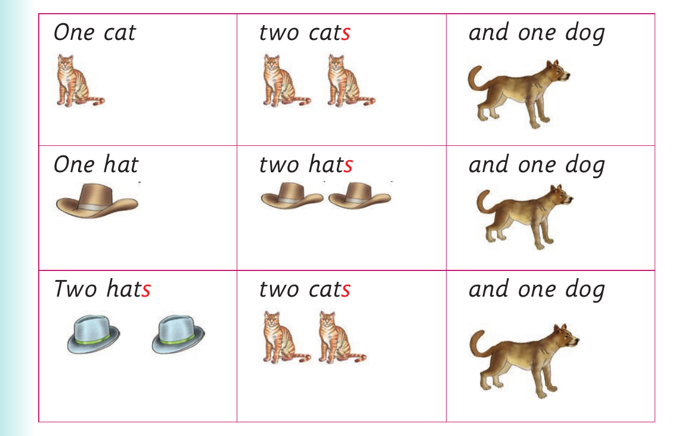

Questions about quantities and a song

Row C. A picture of a house with four windows. Question: How many windows does the house have? Answer sentence: The house has dash. Row D. A picture of four pupils and one teacher in a classroom. Question: How many pupils are there in the classroom? Answer sentence: There are dash.
5. Sing or sign the following song:

One cat. Two cats. And one dog. One hat. Two hats. And one dog. Two hats. Two cats. And one dog.